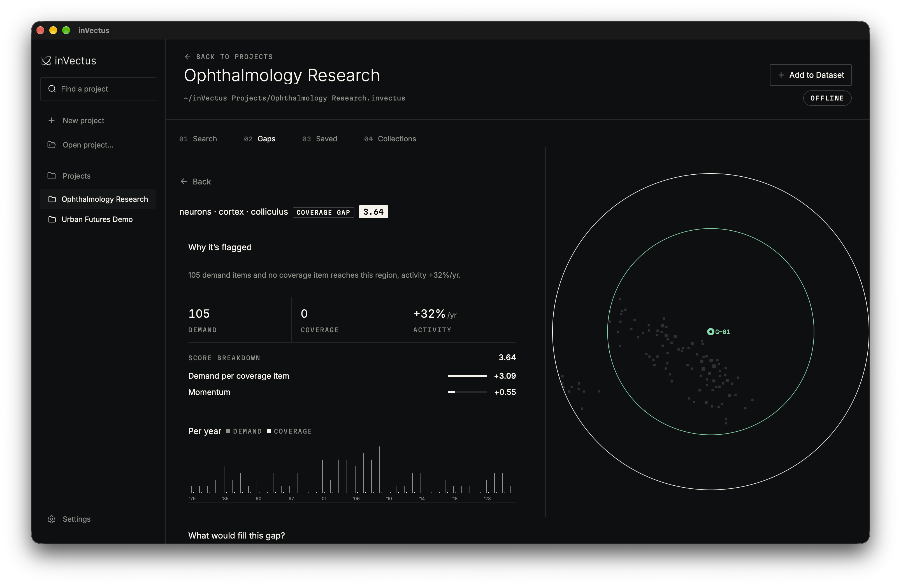

Find Gaps in Existing Data.
Explore a collection. Find areas with limited coverage. Inspect the evidence. inVectus maps your documents, flags potential gaps, and keeps a log of what you decide.
Mapped
Real data: 5,000 PubMed ophthalmology papers, mapped by inVectus
Drag to pan · pinch or ⌘-scroll to zoom · click to open
One Workspace, from Import to Decision.

- 01
Bring Your Own Collection
Import CSV/TSV, Parquet, or folders of text and Markdown. Map columns and mark items as demand, coverage or neutral.
- 02
Search by Meaning
Compare an idea with your collection, inspect the nearest items, and read an experimental calibrated exists / near / open assessment.
- 03
Explore Potential Gaps
Browse coverage gaps, stale coverage and bridges between related regions, each with its evidence and a score breakdown.
- 04
Keep Your Decisions
Bookmark gaps, record notes and verdicts, and return to saved work after rescanning.
Check Any Idea Against Your Data.
inVectus compares an idea with every paper in the same 5,000-paper collection, shows the nearest ones on the map and gives a verdict calibrated on that collection.
Real results from invectus check on the Ophthalmology Research collection, precomputed for this example. Verdicts hold for this collection only; they never imply global novelty.
Bring Claude, ChatGPT or Grok.
Your agent calls inVectus tools on your computer, reads the evidence, and leaves the decision to you.
Illustrative conversation. The tools are inVectus’s real MCP tools, and the gaps, verdicts and papers are real results from the Ophthalmology Research collection.
$ invectus connect add claude-code $ invectus connect add codex $ invectus connect add grok
No listening network port. The agent client starts the local server. Your chosen agent may send prompts and tool results to its provider.
- Offline by default
- Import, embeddings, search, regions and gap scans run locally. Model downloads and PubMed/OpenAlex checks need explicit network access.
- No open port
- Agents talk to inVectus over stdio. inVectus never reads, stores or sends tokens or credential files.
- Inspectable
- Scores, calibration quality and supporting items stay visible. Every embedding space records its full identity, so vectors never mix.